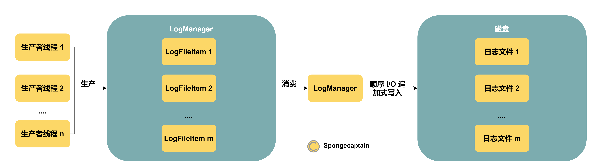
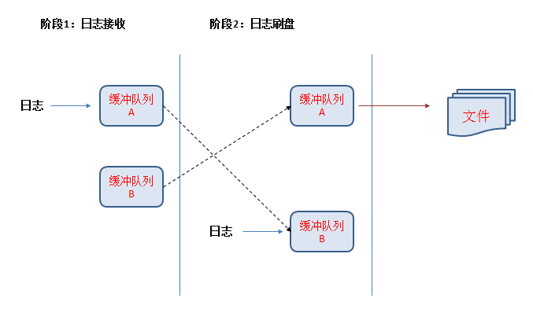

日志开源项目 FLogger 的设计思路解析
文章目录
项目地址：https://github.com/cyfonly/FLogger
为什么要学习一个开源日志框架 FLogger？
首先，日志非常重要，其用途有：资源管理、入侵检测、故障排除、取证、审计、安全与事件管理。不仅仅要会使用日志，也要知道日志究竟是如何基于 Java API 实现。
其次，FLogger 足够轻量简单，但是很好地展示了如何实现一个高效、安全的 Java 日志框架，值得借鉴和学习。
1. 日志文件
在计算机领域，日志文件（logfile）是一个记录了发生在运行中的操作系统或其他软件中的事件的文件，或者记录了在网络聊天软件的用户之间发送的消息。日志记录（Logging）是指保存日志的行为。最简单的做法是将日志写入单个存放日志的文件。
许多操作系统、软件框架和程序都包含日志系统。广泛使用的一项日志标准是 syslog，它在互联网工程任务组（IETF）的 RFC 5424 中定义。syslog 标准使专门的标准化子系统得以生成、过滤、记录和分析日志消息。这可以减轻软件开发人员设计和编写自己的临时日志系统的难度。
日志文件分为不同的种类：
-
事件日志
事件日志（Event logs）记录了在系统运行期间发生的事件，以便于了解系统活动和诊断问题。它对于了解复杂系统的活动轨迹至关重要，尤其是只有很少用户交互的应用程序（例如服务器应用程序）。
集成多个来源的日志文件条目也是有用的。这种方法通过集成的统计数据分析，可能揭示出不同服务器上看似不相关的事件的相关性。其他解决方案则采用网络范围的查询与报告机制。
-
事务日志
大多数数据库系统都维护某种事务日志（transaction log），它们的作用并不是为了后续分析的审计活动，也不是为了便于人类阅读。这些日志记录了对存储数据的更改，以允许数据库在发生崩溃或其他数据错误后恢复并维护存储数据的一致状态。因此数据库系统通常具有常规事件日志与事务日志。
-
消息日志
互联网中继聊天（IRC）、即时通信（IM）、有聊天功能的点对点网络文件共享客户端，以及多人电子游戏游戏（尤其是MMORPG）通常都有自动记录（保存）文本通信的功能，无论它是用户之间的公开还是私密通信。消息日志一般都是普通的纯文本文件，但即时通信和 VoIP 客户端（支持文字聊天，例如 Skype）也可能使用 HTML 或某种自定义格式保存它们，以便于阅读或加密。
-
即时通信（IM）
即时通信和 VoIP 客户端通常加密存储日志，以增强用户隐私保护。这些日志需要密码才能解密和查看，并且通常需要由写入它们的应用程序来处理。
2. FLogger 项目分析
2.1 项目组件
1.项目结构
FLogger 项目仅仅使用了非常有限的类，分别如下：
- Constant 类：提供一些 public final 的字段，例如日志类型、日志级别、字符集等字段；
- CommUtil 类：提供一些工具类方法，例如： 从配置文件中得到指定属性的属性值，将字符串转为字节数组、将异常堆栈转换为字符串；
- TimeUtil 类：用于获取时间信息，每一条日志消息的抬头都是时间信息；
- LogFileItem 类：磁盘中的日志文件在 JVM 内存中的抽象，Flogger 为每一个日志文件在内存中维护了一个 LogFileItem 实例。LogFileItem 实例拥有的信息有：日志文件的名称、日志文件的完整路径、日志大小等信息，其内部还维护着一对双日志缓冲文件；
- LogManager 类：LogManager 是一个 I/O 线程，负责消费所有 LogFileItem 实例内的消息队列中的消息，负责执行 I/O 逻辑，将消息顺序追加写入到磁盘的日志文件中；
- FLogger 类：封装了一个 LogManager 实例，对外提供不同日志类型下的写方法，例如：info、debug、warn、error、fatal 等方法，也提供直接写一条日志的方法：writeLog。事实上，前面的多个方法最终都依赖于 writeLog 方法实现；
2.2 线程模型：基于队列的生产者与消费者模型
-
FLogger 类实例用于面向生产者线程，用于写入日志消息。谁是生产者线程？调用 FLogger 类写日志方法来记录日志的所有线程都是生产者线程，例如 FLoggerTest#main 线程就是一个生产者线程；
-
LogManager 类实例则是消费者线程，用于消费缓冲区的日志消息，顺序 I/O 将日志消息追加到磁盘中的文件；
完整的生产者、消费者逻辑如下图所示：

2.3 线程并发安全设计
我们通常通过 FLogger#getInstance 方法得到一个 FLogger 类单例，因此 Flogger 实例运行在多线程环境下，如下所示：
|
|
而所有 FLogger 类都依赖于一个 LogManager 类单例，因此 LogManager 类实际上运行在多线程环境下，如下所示：
|
|
FLogger 以及 LogManager 类都是单例，那么如何保证它们在多线程环境下线程安全呢？
首先，我们要明白什么时候会发生线程不安全？
由于两个类都是单例，因此只有涉及修改单例的内部字段时才会引起线程不安全的潜在问题。涉及并发的字段是日志文件在内存中对应的 LogFileItem 实例，因此为了保证线程安全性，我们至少需要做如下两件事：
- 当涉及向 LogFileItem 实例写入消息以及取走消息时，我们需要给 LogFileItem 实例上锁；
- 使用双缓冲队列设计（下一节会详细说明双缓冲队列的设计机制）；
2.4 双缓冲队列设计
为什么需要双缓冲队列设计？
缓冲队列是消息生产者与消息消费者之间的中介，可以起到去耦合、异步执行的功能。我们这里又可以把消息的生产者线程称为逻辑线程，把消息的消费者线程称为 I/O 线程。单缓冲队列的最大问题就是异步性不够彻底：当逻辑线程向队列添加消息时，I/O 线程无法从队列中消费消息。当 I/O 线程从队列中消费消息时，逻辑线程也无法向队列添加消息。造成这种不彻底异步性的原因在于需要使用锁机制来确保基于队列生产、消费的并发安全性。
双缓冲队列是一种什么设计？
双缓冲队列的设计就是：我们假设有两个队列 A 以及 B，同一时刻，仅仅有一个队列负责接收逻辑线程产生的消息，我们将其称为 currLogBuff；另一个缓冲队列则被 I/O 线程来负责消费其内的消息实例，其被称为 writeLogBuff。这样一来，逻辑线程与 I/O 线程就不会产生异步执行冲突了。具体实现可以参考 FLogger 的双缓冲队列设计图：

要点：日志刷盘阶段不仅仅完成将缓冲队列 A 的消息日志追加入磁盘文件中，也完成了交换缓冲队列 A、B 的工作。
双缓冲队列的难点就在于切换机制，以及锁粒度的设计。
-
切换双缓冲队列中两个队列的时机是：currLogBuff 达到最低的 I/O 日志输出要求。通常要求与时空有关，例如：因为太久没有将缓冲刷新到磁盘了，因此刷新一下。或者，因为缓冲大小达到刷新的最小大小要求，因此将其刷新到磁盘；
注意：这种机制要求每次交换后，我们必须将此轮交换后的 writeLogBuff 内的所有消息全部刷新到磁盘中，才能进行下次交换。这可以参考 LogManager#flush 方法的遍历逻辑，交换一组队列后，需要将有消息的队列中的所有消息都刷新到磁盘上后，才会进行下一次交换。
-
锁粒度的设计原则的是：最小化锁粒度，锁的有效作用域下不要进行 I/O 操作。
得益于双缓冲队列的设计，只有两个地方会涉及上锁逻辑，且不涉及 I/O 操作：①逻辑线程向队列写消息时；②交换双缓冲队列中的 currLogBuff 以及 writeLogBuff 时；
双缓冲队列的本质
- 思想：以空间换时间；
- 体现：读写分离；
2.5 日志追加式写入磁盘
追加式写入磁盘中的文件得益于 JDK 提供的文件写操作 API：FileOutputStream#write 方法是顺序式追加写，而不是覆盖写。
FLogger 类的写日志方法栈（伪）大致如下：
- FLogger#info 等方法向逻辑线程提供写入一条日志的 API；
- FLogger#writeLog 方法；
- 通过日志输入信息以及时间信息来构造一条日志消息 StringBuilder 实例；
- 将 FileName 以及 StringBuilder 一并交给 LogManager 中的缓冲队列中；
- 如果日志级别为 error，那么就将日志消息打印到控制台；
- 将 StringBuilder 加入到 LogFileItem 中的 ArrayList<StringBuilder> 缓冲队列中；
可见，得益于基于队列的异步以及双缓冲队列，任何调用 FLogger 写日志方法的线程都可以极其快速地写一条日志，这个过程仅仅涉及轻量级的锁，更重要的是不涉及 I/O 操作。可见，FLogger 即使嵌入应用线程，也几乎不影响其运行效率。
真正完成日志消息追加到磁盘文件的线程是 LogManager 线程，其异步地消费缓冲队列中的消息实例，通过顺序 I/O 追加到磁盘中的日志文件。
2.6 JVM 的 shutdownHook 机制
在 Java 程序中可以通过添加关闭钩子，实现在程序退出时关闭资源、平滑退出的功能。
使用 Runtime.addShutdownHook(Thread hook) 方法，可以注册一个JVM关闭的钩子，这个钩子可以在以下几种场景被调用：
- 程序正常退出（即正常所有线程运行结束）；
- 使用 System.exit()
- 终端使用 Ctrl+C 触发的中断
- 系统关闭
- 使用 Kill pid 命令干掉进程（kill -9 不会触发）
关于 shutdownHook 机制可以参考个人 https://github.com/Spongecaptain/JavaShutdownHookTest 项目进一步了解。
Runtime#shutdownHook 方法的具体执行逻辑好比：在 JVM 退出前，先保留堆内的相关实例，然后运行已经通过 Runtime#shutdownHook 方法注册的 Thread 的 run 方法。
FLogger 项目中的 shutdownHook 方法接收的 Thread 实例的 run 方法运行逻辑就是将缓冲队列中的所有消息强制刷新到磁盘中的日志文件上，如下：
|
|
强制刷新是指：原本我们会在缓存队列中的字节大小满足最小刷新大小的规定，或者缓存中的数据在时间上达到最慢刷新时间后，将日志刷新到磁盘的文件中。强制模式下，无需遵循如上的要求，就能将日志消息写于磁盘中的日志文件中。